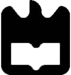

Projecto 1 de Laboratórios de Informática
Desenvolvimento de um conjunto de páginas Web utilizando HTML, CSS e Javascript.
Firefox, Chrome, Safari e Opera
Smartphone, Tablet, Desktop
Simão Gomes (50%): Estrutura base do site em Bootstrap (default theme). Criação e implementação dos gráficos comparativos utilizando JavaScript(JQuery), API's e CSS. Implementação da página Ferramentas com ligação a API's externas e JavaScript(JQuery). Implementação da página Resultados. Criação de CSS dedicado. Teste e validação do código do site.
Pedro Teixeira (50%): Estrutura do site: estrutura das páginas, implementação do estilo CSS (custom theme) e da barra de navegação (incluindo comportamento desta em diferentes resoluções). Adaptação e introdução do conteúdo do trabalho no website (incluido uso de abbr e code). Implementação da página Resultados. Teste e validação do código do site.